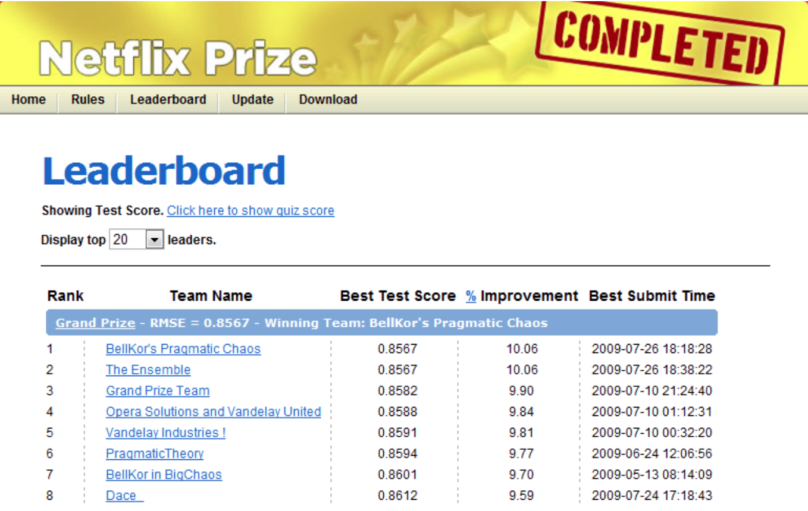
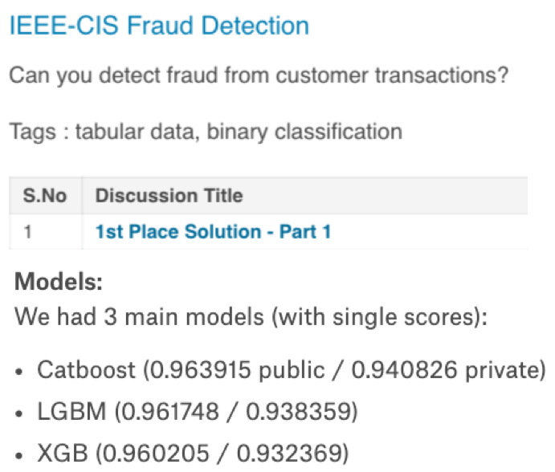
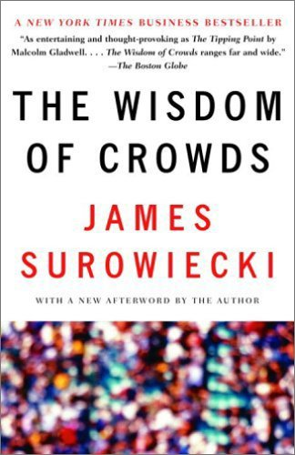

Lecture 11: Ensembles
Contents

Lecture 11: Ensembles#
UBC 2020-21
Instructor: Varada Kolhatkar
The interests of truth require a diversity of opinions.by John Stuart Mill
Imports#
import os
%matplotlib inline
import string
import sys
from collections import deque
import matplotlib.pyplot as plt
import numpy as np
import pandas as pd
sys.path.append("code/.")
from plotting_functions import *
from sklearn import datasets
from sklearn.compose import ColumnTransformer, make_column_transformer
from sklearn.dummy import DummyClassifier, DummyRegressor
from sklearn.ensemble import RandomForestClassifier, RandomForestRegressor
from sklearn.impute import SimpleImputer
from sklearn.linear_model import LogisticRegression
from sklearn.model_selection import (
GridSearchCV,
RandomizedSearchCV,
cross_val_score,
cross_validate,
train_test_split,
)
from sklearn.pipeline import Pipeline, make_pipeline
from sklearn.preprocessing import OneHotEncoder, OrdinalEncoder, StandardScaler
from sklearn.svm import SVC, SVR
from sklearn.tree import DecisionTreeClassifier
from sklearn.feature_extraction.text import CountVectorizer
from sklearn.impute import SimpleImputer
from utils import *
Announcements#
Midterm coming up soon!
All homework solutions (except hw5) are available on Canvas.
Make use of office hours and tutorials.
Lecture learning objectives#
From this lecture, you will be able to
Use
scikit-learn’sRandomForestClassifierand explain its main hyperparameters.Explain randomness in random forest algorithm.
Use other tree-based models such as as
XGBoostandLGBM.Employ ensemble classifier approaches, in particular model averaging and stacking.
Explain voting and stacking and the differences between them.
Use
scikit-learnimplementations of these ensemble methods.
Motivation#
Ensembles are models that combine multiple machine learning models to create more powerful models.
The Netflix prize#

Most of the winning solutions for Kaggle competitions involve some kind of ensembling. For example:

Key idea: Groups can often make better decisions than individuals, especially when group members are diverse enough.

Tree-based ensemble models#
A number of ensemble models in ML literature.
Most successful ones on a variety of datasets are tree-based models.
We’ll briefly talk about two such models:
Random forests
Gradient boosted trees
We’ll also talk about averaging and stacking.
Tree-based models#
Decision trees models are
Interpretable
They can capture non-linear relationships
They don’t require scaling of the data and theoretically can work with categorical features.
But with a single decision trees are likely to overfit.
Key idea: Combine multiple trees to build stronger models.
These kinds of models are extremely popular in industry and machine learning competitions
Data#
In this lecture, we will be using Kaggle’s Spotify Tracks DB dataset. The features in this dataset are similar to Kaggle’s Spotify Song Attributes dataset you used in 571 lab1. But the prediction task for this dataset is a regression task of predicting song popularity. See the documentation of spotify-specific features here.
spotify_df = pd.read_csv("data/SpotifyFeatures.csv")
spotify_df.head()
| genre | artist_name | track_name | track_id | popularity | acousticness | danceability | duration_ms | energy | instrumentalness | key | liveness | loudness | mode | speechiness | tempo | time_signature | valence | |
|---|---|---|---|---|---|---|---|---|---|---|---|---|---|---|---|---|---|---|
| 0 | Movie | Henri Salvador | C'est beau de faire un Show | 0BRjO6ga9RKCKjfDqeFgWV | 0 | 0.611 | 0.389 | 99373 | 0.910 | 0.000 | C# | 0.3460 | -1.828 | Major | 0.0525 | 166.969 | 4/4 | 0.814 |
| 1 | Movie | Martin & les fées | Perdu d'avance (par Gad Elmaleh) | 0BjC1NfoEOOusryehmNudP | 1 | 0.246 | 0.590 | 137373 | 0.737 | 0.000 | F# | 0.1510 | -5.559 | Minor | 0.0868 | 174.003 | 4/4 | 0.816 |
| 2 | Movie | Joseph Williams | Don't Let Me Be Lonely Tonight | 0CoSDzoNIKCRs124s9uTVy | 3 | 0.952 | 0.663 | 170267 | 0.131 | 0.000 | C | 0.1030 | -13.879 | Minor | 0.0362 | 99.488 | 5/4 | 0.368 |
| 3 | Movie | Henri Salvador | Dis-moi Monsieur Gordon Cooper | 0Gc6TVm52BwZD07Ki6tIvf | 0 | 0.703 | 0.240 | 152427 | 0.326 | 0.000 | C# | 0.0985 | -12.178 | Major | 0.0395 | 171.758 | 4/4 | 0.227 |
| 4 | Movie | Fabien Nataf | Ouverture | 0IuslXpMROHdEPvSl1fTQK | 4 | 0.950 | 0.331 | 82625 | 0.225 | 0.123 | F | 0.2020 | -21.150 | Major | 0.0456 | 140.576 | 4/4 | 0.390 |
I’m cleaning up the CSV a bit. In particular,
I’m changing popularity of 0 to 1 to avoid divide by zero errors latter. Note that the popularity ranges from 0 to 100, with 0 being least popular and 100 being most popular. So changing the popularity from 0 to 1 should not make a huge difference.
Seems like the genre feature has two slightly different versions of the category Children’s Music with two different quotation marks (` and ‘). I’m mapping them both to “Children’s Music”.
spotify_df.loc[spotify_df["popularity"] == 0, "popularity"] = 1
spotify_df["genre"].value_counts()
Comedy 9681
Soundtrack 9646
Indie 9543
Jazz 9441
Pop 9386
Electronic 9377
Children’s Music 9353
Folk 9299
Hip-Hop 9295
Rock 9272
Alternative 9263
Classical 9256
Rap 9232
World 9096
Soul 9089
Blues 9023
R&B 8992
Anime 8936
Reggaeton 8927
Ska 8874
Reggae 8771
Dance 8701
Country 8664
Opera 8280
Movie 7806
Children's Music 5403
A Capella 119
Name: genre, dtype: int64
spotify_df.loc[spotify_df["genre"] == "Children’s Music", "genre"] = "Children's Music"
Interesting observation: It seems right to collapse these categories into one category but for some reason doing this makes a big difference in R^2 scores. When you skip the step above, i.e., when you keep the two categories separate, I was able to get
RidgeR^2 score with all features and default alpha value as 0.73. Weird!!
This dataset is large and in this lab we want to explore ensemble methods which can be computationally intensive. So when we split the data, I am putting most of the data in the test split. If your computer can handle it, you are welcome to experiment with a bigger training split.
spotify_df.shape
(232725, 18)
train_df, test_df = train_test_split(spotify_df, test_size=0.97, random_state=123)
train_df.shape
(6981, 18)
train_df.info()
<class 'pandas.core.frame.DataFrame'>
Int64Index: 6981 entries, 57856 to 15725
Data columns (total 18 columns):
# Column Non-Null Count Dtype
--- ------ -------------- -----
0 genre 6981 non-null object
1 artist_name 6981 non-null object
2 track_name 6981 non-null object
3 track_id 6981 non-null object
4 popularity 6981 non-null int64
5 acousticness 6981 non-null float64
6 danceability 6981 non-null float64
7 duration_ms 6981 non-null int64
8 energy 6981 non-null float64
9 instrumentalness 6981 non-null float64
10 key 6981 non-null object
11 liveness 6981 non-null float64
12 loudness 6981 non-null float64
13 mode 6981 non-null object
14 speechiness 6981 non-null float64
15 tempo 6981 non-null float64
16 time_signature 6981 non-null object
17 valence 6981 non-null float64
dtypes: float64(9), int64(2), object(7)
memory usage: 1.0+ MB
I am defining different feature types and a couple of preprocessors below.
drop_features = ["track_id", "artist_name"]
binary_features = ["mode"]
categorical_features = ["genre", "time_signature", "key"]
text_feature = "track_name"
target = "popularity"
numeric_features = list(
set(train_df.columns)
- set(drop_features)
- set([text_feature])
- set(binary_features)
- set(categorical_features)
- set([target])
)
assert train_df.columns.shape[0] == len(
drop_features
+ binary_features
+ categorical_features
+ numeric_features
+ [text_feature]
+ [target]
)
preprocessor = make_column_transformer(
(StandardScaler(), numeric_features),
(OneHotEncoder(drop="if_binary", dtype="int"), binary_features),
("drop", drop_features),
) # preprocessor which includes only numeric and binary features
preprocessor_all = make_column_transformer(
(StandardScaler(), numeric_features),
(OneHotEncoder(drop="if_binary", dtype="int"), binary_features),
(OneHotEncoder(handle_unknown="ignore", dtype="int"), categorical_features),
(CountVectorizer(stop_words="english", max_features=100), text_feature),
("drop", drop_features),
) # preprocessor which includes all features
X_train, y_train = train_df.drop(columns=[target]), train_df[target]
X_test, y_test = test_df.drop(columns=[target]), test_df[target]
preprocessor.fit(X_train)
preprocessor_all.fit(X_train);
OK. Seems like both preprocessors are working OK.
Let’s store all the results in a dictionary called results.
results = {}
Let’s use the following scoring metrics.
scoring_metrics = {
"neg RMSE": "neg_root_mean_squared_error",
"r2": "r2",
"neg mape": "neg_mean_absolute_percentage_error",
}
Baselines#
DummyRegressor baseline#
dummy = DummyRegressor()
results["Dummy"] = mean_std_cross_val_scores(
dummy, X_train, y_train, return_train_score=True, scoring=scoring_metrics
)
pd.DataFrame(results)
| Dummy | |
|---|---|
| fit_time | 0.000 (+/- 0.000) |
| score_time | 0.000 (+/- 0.000) |
| test_neg RMSE | -18.105 (+/- 0.329) |
| train_neg RMSE | -18.102 (+/- 0.083) |
| test_r2 | -0.002 (+/- 0.001) |
| train_r2 | 0.000 (+/- 0.000) |
| test_neg mape | -1.935 (+/- 0.168) |
| train_neg mape | -1.935 (+/- 0.039) |
DecisionTreeRegressor baseline#
Let’s try decision tree classifier on our data.
dt_pipe = make_pipeline(preprocessor, DecisionTreeRegressor(random_state=123))
results["decisicion tree"] = mean_std_cross_val_scores(
dt_pipe, X_train, y_train, return_train_score=True, scoring=scoring_metrics
)
pd.DataFrame(results)
| Dummy | decisicion tree | |
|---|---|---|
| fit_time | 0.000 (+/- 0.000) | 0.050 (+/- 0.007) |
| score_time | 0.000 (+/- 0.000) | 0.002 (+/- 0.000) |
| test_neg RMSE | -18.105 (+/- 0.329) | -20.830 (+/- 0.318) |
| train_neg RMSE | -18.102 (+/- 0.083) | -0.118 (+/- 0.019) |
| test_r2 | -0.002 (+/- 0.001) | -0.326 (+/- 0.011) |
| train_r2 | 0.000 (+/- 0.000) | 1.000 (+/- 0.000) |
| test_neg mape | -1.935 (+/- 0.168) | -1.469 (+/- 0.202) |
| train_neg mape | -1.935 (+/- 0.039) | -0.000 (+/- 0.000) |
Decision tree is clearly overfitting.
Random forests#
General idea#
A single decision tree is likely to overfit
Use a collection of diverse decision trees
Each tree overfits on some part of the data but we can reduce overfitting by averaging the results
can be shown mathematically
RandomForestRegressor#
Before understanding the details let’s first try it out.
from sklearn.ensemble import RandomForestRegressor
pipe_rf = make_pipeline(preprocessor, RandomForestRegressor(random_state=123))
results["Random forests"] = mean_std_cross_val_scores(
pipe_rf, X_train, y_train, return_train_score=True, scoring=scoring_metrics
)
pd.DataFrame(results)
| Dummy | decisicion tree | Random forests | |
|---|---|---|---|
| fit_time | 0.000 (+/- 0.000) | 0.050 (+/- 0.007) | 2.582 (+/- 0.016) |
| score_time | 0.000 (+/- 0.000) | 0.002 (+/- 0.000) | 0.024 (+/- 0.000) |
| test_neg RMSE | -18.105 (+/- 0.329) | -20.830 (+/- 0.318) | -14.826 (+/- 0.414) |
| train_neg RMSE | -18.102 (+/- 0.083) | -0.118 (+/- 0.019) | -5.571 (+/- 0.055) |
| test_r2 | -0.002 (+/- 0.001) | -0.326 (+/- 0.011) | 0.328 (+/- 0.026) |
| train_r2 | 0.000 (+/- 0.000) | 1.000 (+/- 0.000) | 0.905 (+/- 0.002) |
| test_neg mape | -1.935 (+/- 0.168) | -1.469 (+/- 0.202) | -1.380 (+/- 0.155) |
| train_neg mape | -1.935 (+/- 0.039) | -0.000 (+/- 0.000) | -0.505 (+/- 0.017) |
The validation scores are better although it seems likes we are still overfitting.
How do they work?#
Decide how many decision trees we want to build
can control with
n_estimatorshyperparameter
fita diverse set of that many decision trees by injecting randomness in the classifier constructionpredictby voting (classification) or averaging (regression) of predictions given by individual models
Inject randomness in the classifier construction#
To ensure that the trees in the random forest are different we inject randomness in two ways:
Data: Build each tree on a bootstrap sample (i.e., a sample drawn with replacement from the training set)
Features: At each node, select a random subset of features (controlled by
max_featuresinscikit-learn) and look for the best possible test involving one of these features
An example of a bootstrap samples Suppose this is your original dataset: [1,2,3,4]
a sample drawn with replacement: [1,1,3,4]
a sample drawn with replacement: [3,2,2,2]
a sample drawn with replacement: [1,2,4,4]
…
See also
There is also something called ExtraTreesClassifier, where we add more randomness by consider a random subset of features at each split and random threshold.
The random forests classifier#
Create a collection (ensemble) of trees. Grow each tree on an independent bootstrap sample from the data.
At each node:
Randomly select a subset of features out of all features (independently for each node).
Find the best split on the selected features.
Grow the trees to maximum depth.
Prediction time
Vote the trees to get predictions for new example.
Example#
Let’s create a random forest with 3 estimators.
I’m using
max_depth=2for easy visualization.
pipe_rf_demo = make_pipeline(
preprocessor, RandomForestRegressor(max_depth=2, n_estimators=3, random_state=123)
)
pipe_rf_demo.fit(X_train, y_train);
Let’s get the feature names of transformed features.
feature_names = (
numeric_features
+ binary_features
)
feature_names[:10]
['energy',
'liveness',
'duration_ms',
'loudness',
'valence',
'tempo',
'acousticness',
'instrumentalness',
'danceability',
'speechiness']
Let’s sample a test example.
test_example = X_test.sample(1)
print("Prediction by random forest: ", pipe_rf_demo.predict(test_example))
transformed_example = preprocessor.transform(test_example)
pd.DataFrame(data=transformed_example.flatten(), index=feature_names)
Prediction by random forest: [46.11469119]
| 0 | |
|---|---|
| energy | 1.091342 |
| liveness | -0.275493 |
| duration_ms | 1.489203 |
| loudness | 0.344769 |
| valence | -0.646706 |
| tempo | -0.541636 |
| acousticness | -1.041827 |
| instrumentalness | -0.484662 |
| danceability | -1.162197 |
| speechiness | -0.384373 |
| mode | 1.000000 |
We can look at different trees created by random forest.
Note that each tree looks at different set of features and slightly different data.
preds_sum = 0
for i, tree in enumerate(
pipe_rf_demo.named_steps["randomforestregressor"].estimators_
):
print("\n\nTree", i + 1)
pred = tree.predict(preprocessor.transform(test_example))
print("prediction", pred)
preds_sum += pred[0]
#tree_source = export_graphviz(tree, feature_names = numeric_features + binary_features, impurity=False, filled=True)
#graphviz.Source(tree_source)
Tree 1
prediction [47.03839733]
Tree 2
prediction [45.584413]
Tree 3
prediction [45.72126324]
preds_sum/3
46.114691188394055
pipe_rf_demo.predict(test_example)
array([46.11469119])
Some important hyperparameters:#
n_estimators: number of decision trees (higher = more complexity)max_depth: max depth of each decision tree (higher = more complexity)max_features: the number of features you get to look at each split (higher = more complexity)
Random forests: number of trees (n_estimators) and the fundamental tradeoff#
make_num_tree_plot_reg(
preprocessor, X_train, y_train, X_test, y_test, [1, 5, 10, 25, 50, 100, 200, 500]
)
---------------------------------------------------------------------------
NameError Traceback (most recent call last)
Cell In [26], line 1
----> 1 make_num_tree_plot_reg(
2 preprocessor, X_train, y_train, X_test, y_test, [1, 5, 10, 25, 50, 100, 200, 500]
3 )
NameError: name 'make_num_tree_plot_reg' is not defined
Number of trees and fundamental trade-off#
Above: seems like we’re beating the fundamental “tradeoff” by increasing training score and not decreasing validation score much.
This is the promise of ensembles, though it’s not guaranteed to work so nicely.
More trees are always better! We pick less trees for speed.
Strengths and weaknesses#
Usually one of the best performing off-the-shelf classifiers without heavy tuning of hyperparameters
Don’t require scaling of data
Overfitting is not a big problem.
Slower than decision trees because we are fitting multiple trees but can easily parallelize training because all trees are independent of each other
In general, able to capture a much broader picture of the data compared to a single decision tree.
Weaknesses#
Require more memory
Hard to interpret
Tend not to perform well on high dimensional sparse data such as text data
Important
Make sure to set the random_state for reproducibility. Changing the random_state can have a big impact on the model and the results due to the random nature of these models. Having more trees can get you a more robust estimate.
See also
The original random forests paper by Leo Breiman.
Gradient boosted trees#
Another popular and effective class of tree-based models is gradient boosted trees.
No randomization.
The key idea is combining many simple models called weak learners to create a strong learner.
They combine multiple shallow (depth 1 to 5) decision trees
They build trees in a serial manner, where each tree tries to correct the mistakes of the previous one.
Important hyperparameters#
n_estimatorscontrol the number of trees to build
learning_ratecontrols how strongly each tree tries to correct the mistakes of the previous trees
higher learning rate means each tree can make stronger corrections, which means more complex model
We’ll not go into the details. We’ll look at brief examples of using the following three gradient boosted tree models.
XGBoost#
Not part of
sklearnbut has similar interface.Install it in your conda environment:
conda install -c conda-forge xgboostSupports missing values
GPU training, networked parallel training
Supports sparse data
Typically better scores than random forests
LightGBM#
Not part of
sklearnbut has similar interface.Install it in your conda environment:
conda install -c conda-forge lightgbmSmall model size
Faster
Typically better scores than random forests
CatBoost#
Not part of
sklearnbut has similar interface.Install it in your conda environment:
conda install -c conda-forge catboostUsually better scores but slower compared to
XGBoostandLightGBM
from lightgbm.sklearn import LGBMRegressor
from sklearn.tree import DecisionTreeRegressor
from xgboost import XGBRegressor
from catboost import CatBoostRegressor
pipe_lr = make_pipeline(
preprocessor, LogisticRegression(max_iter=2000, random_state=123)
)
pipe_dt = make_pipeline(preprocessor, DecisionTreeRegressor(random_state=123))
pipe_rf = make_pipeline(preprocessor, RandomForestRegressor(random_state=123))
pipe_xgb = make_pipeline(
preprocessor, XGBRegressor(random_state=123, eval_metric="logloss", verbosity=0)
)
pipe_lgbm = make_pipeline(preprocessor, LGBMRegressor(random_state=123))
pipe_catboost = make_pipeline(
preprocessor, CatBoostRegressor(verbose=0, random_state=123)
)
models = {
"logistic regression": pipe_lr,
"decision tree": pipe_dt,
"random forest": pipe_rf,
"XGBoost": pipe_xgb,
"LightGBM": pipe_lgbm,
"CatBoost": pipe_catboost,
}
import warnings
warnings.simplefilter(action="ignore", category=DeprecationWarning)
warnings.simplefilter(action="ignore", category=UserWarning)
results = {}
dummy = DummyRegressor()
results["Dummy"] = mean_std_cross_val_scores(
dummy, X_train, y_train, return_train_score=True, scoring=scoring_metrics
)
pd.DataFrame(results)
| Dummy | |
|---|---|
| fit_time | 0.002 (+/- 0.003) |
| score_time | 0.001 (+/- 0.000) |
| test_neg RMSE | -18.105 (+/- 0.329) |
| train_neg RMSE | -18.102 (+/- 0.083) |
| test_r2 | -0.002 (+/- 0.001) |
| train_r2 | 0.000 (+/- 0.000) |
| test_neg mape | -1.935 (+/- 0.168) |
| train_neg mape | -1.935 (+/- 0.039) |
for (name, model) in models.items():
results[name] = mean_std_cross_val_scores(
model, X_train, y_train, return_train_score=True, scoring=scoring_metrics
)
pd.DataFrame(results).
| Dummy | logistic regression | decision tree | random forest | XGBoost | LightGBM | CatBoost | |
|---|---|---|---|---|---|---|---|
| fit_time | 0.002 (+/- 0.003) | 0.710 (+/- 0.077) | 0.050 (+/- 0.003) | 2.527 (+/- 0.024) | 0.223 (+/- 0.014) | 0.077 (+/- 0.012) | 1.238 (+/- 0.046) |
| score_time | 0.001 (+/- 0.000) | 0.003 (+/- 0.001) | 0.002 (+/- 0.001) | 0.023 (+/- 0.000) | 0.003 (+/- 0.001) | 0.004 (+/- 0.001) | 0.003 (+/- 0.001) |
| test_neg RMSE | -18.105 (+/- 0.329) | -22.054 (+/- 0.925) | -21.006 (+/- 0.408) | -14.814 (+/- 0.416) | -15.672 (+/- 0.364) | -14.939 (+/- 0.448) | -14.925 (+/- 0.369) |
| train_neg RMSE | -18.102 (+/- 0.083) | -22.157 (+/- 0.136) | -0.118 (+/- 0.019) | -5.577 (+/- 0.056) | -6.728 (+/- 0.185) | -10.917 (+/- 0.058) | -9.827 (+/- 0.089) |
| test_r2 | -0.002 (+/- 0.001) | -0.486 (+/- 0.120) | -0.348 (+/- 0.030) | 0.329 (+/- 0.026) | 0.249 (+/- 0.031) | 0.318 (+/- 0.031) | 0.319 (+/- 0.028) |
| train_r2 | 0.000 (+/- 0.000) | -0.498 (+/- 0.019) | 1.000 (+/- 0.000) | 0.905 (+/- 0.002) | 0.862 (+/- 0.009) | 0.636 (+/- 0.003) | 0.705 (+/- 0.005) |
| test_neg mape | -1.935 (+/- 0.168) | -0.909 (+/- 0.106) | -1.492 (+/- 0.174) | -1.380 (+/- 0.154) | -1.346 (+/- 0.171) | -1.354 (+/- 0.173) | -1.333 (+/- 0.159) |
| train_neg mape | -1.935 (+/- 0.039) | -0.920 (+/- 0.029) | -0.000 (+/- 0.000) | -0.507 (+/- 0.017) | -0.461 (+/- 0.019) | -0.927 (+/- 0.026) | -0.779 (+/- 0.022) |
Some observations
Keep in mind all these results are with default hyperparameters
Ideally we would carry out hyperparameter optimization for all of them and then compare the results.
We are using a particular scoring metric (accuracy in this case)
We are scaling numeric features but it shouldn’t matter for these tree-based models.
Look at the std. Doesn’t look very high.
The scores look more or less stable.
pd.DataFrame(results).T
| fit_time | score_time | test_neg RMSE | train_neg RMSE | test_r2 | train_r2 | test_neg mape | train_neg mape | |
|---|---|---|---|---|---|---|---|---|
| Dummy | 0.002 (+/- 0.003) | 0.001 (+/- 0.000) | -18.105 (+/- 0.329) | -18.102 (+/- 0.083) | -0.002 (+/- 0.001) | 0.000 (+/- 0.000) | -1.935 (+/- 0.168) | -1.935 (+/- 0.039) |
| logistic regression | 0.710 (+/- 0.077) | 0.003 (+/- 0.001) | -22.054 (+/- 0.925) | -22.157 (+/- 0.136) | -0.486 (+/- 0.120) | -0.498 (+/- 0.019) | -0.909 (+/- 0.106) | -0.920 (+/- 0.029) |
| decision tree | 0.050 (+/- 0.003) | 0.002 (+/- 0.001) | -21.006 (+/- 0.408) | -0.118 (+/- 0.019) | -0.348 (+/- 0.030) | 1.000 (+/- 0.000) | -1.492 (+/- 0.174) | -0.000 (+/- 0.000) |
| random forest | 2.527 (+/- 0.024) | 0.023 (+/- 0.000) | -14.814 (+/- 0.416) | -5.577 (+/- 0.056) | 0.329 (+/- 0.026) | 0.905 (+/- 0.002) | -1.380 (+/- 0.154) | -0.507 (+/- 0.017) |
| XGBoost | 0.223 (+/- 0.014) | 0.003 (+/- 0.001) | -15.672 (+/- 0.364) | -6.728 (+/- 0.185) | 0.249 (+/- 0.031) | 0.862 (+/- 0.009) | -1.346 (+/- 0.171) | -0.461 (+/- 0.019) |
| LightGBM | 0.077 (+/- 0.012) | 0.004 (+/- 0.001) | -14.939 (+/- 0.448) | -10.917 (+/- 0.058) | 0.318 (+/- 0.031) | 0.636 (+/- 0.003) | -1.354 (+/- 0.173) | -0.927 (+/- 0.026) |
| CatBoost | 1.238 (+/- 0.046) | 0.003 (+/- 0.001) | -14.925 (+/- 0.369) | -9.827 (+/- 0.089) | 0.319 (+/- 0.028) | 0.705 (+/- 0.005) | -1.333 (+/- 0.159) | -0.779 (+/- 0.022) |
Decision trees and random forests overfit
Other models do not seem to overfit much.
Fit times
Decision trees are fast but not very accurate
LightGBM is faster than decision trees and more accurate!
CatBoost fit time is highest followed by random forests.
There is not much difference between the validation scores of XGBoost, LightGBM, and CatBoost but it is about 48x slower than LightGBM!
XGBoost and LightGBM are faster and more accurate than random forest!
Scores times
Prediction times are much smaller in all cases.
What classifier should I use?#
Simple answer
Whichever gets the highest CV score making sure that you’re not overusing the validation set.
Interpretability
This is an area of growing interest and concern in ML.
How important is interpretability for you?
In the next class we’ll talk about interpretability of non-linear models.
Speed/code maintenance
Other considerations could be speed (fit and/or predict), maintainability of the code.
Finally, you could use all of them!
Averaging#
Earlier we looked at a bunch of classifiers:
models.keys()
dict_keys(['logistic regression', 'decision tree', 'random forest', 'XGBoost', 'LightGBM', 'CatBoost'])
What if we use all these models and let them vote during prediction time?
from sklearn.ensemble import VotingRegressor
averaging_model = VotingRegressor(
list(models.items())
) # need the list() here for cross_val to work!
from sklearn import set_config
set_config(display="diagram") # global setting
averaging_model
VotingRegressor(estimators=[('logistic regression',
Pipeline(steps=[('columntransformer',
ColumnTransformer(transformers=[('standardscaler',
StandardScaler(),
['valence',
'instrumentalness',
'duration_ms',
'liveness',
'tempo',
'energy',
'danceability',
'loudness',
'acousticness',
'speechiness']),
('onehotencoder',
OneHotEncoder(drop='if_binary',
dtype='int'),
['mode...
ColumnTransformer(transformers=[('standardscaler',
StandardScaler(),
['valence',
'instrumentalness',
'duration_ms',
'liveness',
'tempo',
'energy',
'danceability',
'loudness',
'acousticness',
'speechiness']),
('onehotencoder',
OneHotEncoder(drop='if_binary',
dtype='int'),
['mode']),
('drop',
'drop',
['track_id',
'artist_name'])])),
('catboostregressor',
<catboost.core.CatBoostRegressor object at 0x144151600>)]))])In a Jupyter environment, please rerun this cell to show the HTML representation or trust the notebook. On GitHub, the HTML representation is unable to render, please try loading this page with nbviewer.org.
VotingRegressor(estimators=[('logistic regression',
Pipeline(steps=[('columntransformer',
ColumnTransformer(transformers=[('standardscaler',
StandardScaler(),
['valence',
'instrumentalness',
'duration_ms',
'liveness',
'tempo',
'energy',
'danceability',
'loudness',
'acousticness',
'speechiness']),
('onehotencoder',
OneHotEncoder(drop='if_binary',
dtype='int'),
['mode...
ColumnTransformer(transformers=[('standardscaler',
StandardScaler(),
['valence',
'instrumentalness',
'duration_ms',
'liveness',
'tempo',
'energy',
'danceability',
'loudness',
'acousticness',
'speechiness']),
('onehotencoder',
OneHotEncoder(drop='if_binary',
dtype='int'),
['mode']),
('drop',
'drop',
['track_id',
'artist_name'])])),
('catboostregressor',
<catboost.core.CatBoostRegressor object at 0x144151600>)]))])ColumnTransformer(transformers=[('standardscaler', StandardScaler(),
['valence', 'instrumentalness', 'duration_ms',
'liveness', 'tempo', 'energy', 'danceability',
'loudness', 'acousticness', 'speechiness']),
('onehotencoder',
OneHotEncoder(drop='if_binary', dtype='int'),
['mode']),
('drop', 'drop', ['track_id', 'artist_name'])])['valence', 'instrumentalness', 'duration_ms', 'liveness', 'tempo', 'energy', 'danceability', 'loudness', 'acousticness', 'speechiness']
StandardScaler()
['mode']
OneHotEncoder(drop='if_binary', dtype='int')
['track_id', 'artist_name']
drop
LogisticRegression(max_iter=2000, random_state=123)
ColumnTransformer(transformers=[('standardscaler', StandardScaler(),
['valence', 'instrumentalness', 'duration_ms',
'liveness', 'tempo', 'energy', 'danceability',
'loudness', 'acousticness', 'speechiness']),
('onehotencoder',
OneHotEncoder(drop='if_binary', dtype='int'),
['mode']),
('drop', 'drop', ['track_id', 'artist_name'])])['valence', 'instrumentalness', 'duration_ms', 'liveness', 'tempo', 'energy', 'danceability', 'loudness', 'acousticness', 'speechiness']
StandardScaler()
['mode']
OneHotEncoder(drop='if_binary', dtype='int')
['track_id', 'artist_name']
drop
DecisionTreeRegressor(random_state=123)
ColumnTransformer(transformers=[('standardscaler', StandardScaler(),
['valence', 'instrumentalness', 'duration_ms',
'liveness', 'tempo', 'energy', 'danceability',
'loudness', 'acousticness', 'speechiness']),
('onehotencoder',
OneHotEncoder(drop='if_binary', dtype='int'),
['mode']),
('drop', 'drop', ['track_id', 'artist_name'])])['valence', 'instrumentalness', 'duration_ms', 'liveness', 'tempo', 'energy', 'danceability', 'loudness', 'acousticness', 'speechiness']
StandardScaler()
['mode']
OneHotEncoder(drop='if_binary', dtype='int')
['track_id', 'artist_name']
drop
RandomForestRegressor(random_state=123)
ColumnTransformer(transformers=[('standardscaler', StandardScaler(),
['valence', 'instrumentalness', 'duration_ms',
'liveness', 'tempo', 'energy', 'danceability',
'loudness', 'acousticness', 'speechiness']),
('onehotencoder',
OneHotEncoder(drop='if_binary', dtype='int'),
['mode']),
('drop', 'drop', ['track_id', 'artist_name'])])['valence', 'instrumentalness', 'duration_ms', 'liveness', 'tempo', 'energy', 'danceability', 'loudness', 'acousticness', 'speechiness']
StandardScaler()
['mode']
OneHotEncoder(drop='if_binary', dtype='int')
['track_id', 'artist_name']
drop
XGBRegressor(base_score=None, booster=None, callbacks=None,
colsample_bylevel=None, colsample_bynode=None,
colsample_bytree=None, early_stopping_rounds=None,
enable_categorical=False, eval_metric='logloss', gamma=None,
gpu_id=None, grow_policy=None, importance_type=None,
interaction_constraints=None, learning_rate=None, max_bin=None,
max_cat_to_onehot=None, max_delta_step=None, max_depth=None,
max_leaves=None, min_child_weight=None, missing=nan,
monotone_constraints=None, n_estimators=100, n_jobs=None,
num_parallel_tree=None, predictor=None, random_state=123,
reg_alpha=None, reg_lambda=None, ...)ColumnTransformer(transformers=[('standardscaler', StandardScaler(),
['valence', 'instrumentalness', 'duration_ms',
'liveness', 'tempo', 'energy', 'danceability',
'loudness', 'acousticness', 'speechiness']),
('onehotencoder',
OneHotEncoder(drop='if_binary', dtype='int'),
['mode']),
('drop', 'drop', ['track_id', 'artist_name'])])['valence', 'instrumentalness', 'duration_ms', 'liveness', 'tempo', 'energy', 'danceability', 'loudness', 'acousticness', 'speechiness']
StandardScaler()
['mode']
OneHotEncoder(drop='if_binary', dtype='int')
['track_id', 'artist_name']
drop
LGBMRegressor(random_state=123)
ColumnTransformer(transformers=[('standardscaler', StandardScaler(),
['valence', 'instrumentalness', 'duration_ms',
'liveness', 'tempo', 'energy', 'danceability',
'loudness', 'acousticness', 'speechiness']),
('onehotencoder',
OneHotEncoder(drop='if_binary', dtype='int'),
['mode']),
('drop', 'drop', ['track_id', 'artist_name'])])['valence', 'instrumentalness', 'duration_ms', 'liveness', 'tempo', 'energy', 'danceability', 'loudness', 'acousticness', 'speechiness']
StandardScaler()
['mode']
OneHotEncoder(drop='if_binary', dtype='int')
['track_id', 'artist_name']
drop
<catboost.core.CatBoostRegressor object at 0x144151600>
This VotingClassifier will take a vote using the predictions of the constituent classifier pipelines.
Main parameter: voting
voting='hard'it uses the output of
predictand actually votes.
voting='soft'with
voting='soft'it averages the output ofpredict_probaand then thresholds / takes the larger.
The choice depends on whether you trust
predict_probafrom your base classifiers - if so, it’s nice to access that information.
averaging_model.fit(X_train, y_train);
---------------------------------------------------------------------------
ValueError Traceback (most recent call last)
Cell In [62], line 1
----> 1 averaging_model.fit(X_train, y_train)
File ~/opt/miniconda3/envs/cpsc330/lib/python3.10/site-packages/sklearn/ensemble/_voting.py:601, in VotingRegressor.fit(self, X, y, sample_weight)
579 """Fit the estimators.
580
581 Parameters
(...)
598 Fitted estimator.
599 """
600 y = column_or_1d(y, warn=True)
--> 601 return super().fit(X, y, sample_weight)
File ~/opt/miniconda3/envs/cpsc330/lib/python3.10/site-packages/sklearn/ensemble/_voting.py:68, in _BaseVoting.fit(self, X, y, sample_weight)
65 @abstractmethod
66 def fit(self, X, y, sample_weight=None):
67 """Get common fit operations."""
---> 68 names, clfs = self._validate_estimators()
70 check_scalar(
71 self.verbose,
72 name="verbose",
73 target_type=(numbers.Integral, np.bool_),
74 min_val=0,
75 )
77 if self.weights is not None and len(self.weights) != len(self.estimators):
File ~/opt/miniconda3/envs/cpsc330/lib/python3.10/site-packages/sklearn/ensemble/_base.py:277, in _BaseHeterogeneousEnsemble._validate_estimators(self)
275 for est in estimators:
276 if est != "drop" and not is_estimator_type(est):
--> 277 raise ValueError(
278 "The estimator {} should be a {}.".format(
279 est.__class__.__name__, is_estimator_type.__name__[3:]
280 )
281 )
283 return names, estimators
ValueError: The estimator Pipeline should be a regressor.
What happens when you
fitaVotingClassifier?It will fit all constituent models.
Note
It seems sklearn requires us to actually call fit on the VotingClassifier, instead of passing in pre-fit models. This is an implementation choice rather than a conceptual limitation.
Let’s look at particular test examples where income is “>50k” (y=1):
test_g50k = (
test_df.query("income == '>50K'").sample(4, random_state=2).drop(columns=["income"])
)
test_l50k = (
test_df.query("income == '<=50K'")
.sample(4, random_state=2)
.drop(columns=["income"])
)
averaging_model.classes_
array(['<=50K', '>50K'], dtype=object)
data = {"Voting classifier": averaging_model.predict(test_g50k)}
pd.DataFrame(data)
| Voting classifier | |
|---|---|
| 0 | >50K |
| 1 | >50K |
| 2 | >50K |
| 3 | <=50K |
For hard voting, these are the votes:
r1 = {
name: classifier.predict(test_g50k)
for name, classifier in averaging_model.named_estimators_.items()
}
data.update(r1)
pd.DataFrame(data)
| Voting classifier | logistic regression | decision tree | random forest | XGBoost | LightGBM | CatBoost | |
|---|---|---|---|---|---|---|---|
| 0 | >50K | 1 | 1 | 1 | 1 | 1 | 1 |
| 1 | >50K | 1 | 1 | 1 | 1 | 1 | 1 |
| 2 | >50K | 1 | 0 | 1 | 1 | 1 | 1 |
| 3 | <=50K | 0 | 0 | 0 | 0 | 0 | 0 |
For soft voting, these are the scores:
r1 = {
name: classifier.predict_proba(test_g50k)
for name, classifier in averaging_model.named_estimators_.items()
}
r1
{'logistic regression': array([[2.30926389e-14, 1.00000000e+00],
[4.18858309e-01, 5.81141691e-01],
[4.96765232e-01, 5.03234768e-01],
[8.87453869e-01, 1.12546131e-01]]),
'decision tree': array([[0., 1.],
[0., 1.],
[1., 0.],
[1., 0.]]),
'random forest': array([[0. , 1. ],
[0.31, 0.69],
[0.37, 0.63],
[0.57, 0.43]]),
'XGBoost': array([[0.00168145, 0.99831855],
[0.30067134, 0.69932866],
[0.31893963, 0.6810604 ],
[0.78900903, 0.21099098]], dtype=float32),
'LightGBM': array([[0.00187645, 0.99812355],
[0.28722892, 0.71277108],
[0.28457261, 0.71542739],
[0.8095596 , 0.1904404 ]]),
'CatBoost': array([[0.00151693, 0.99848307],
[0.28344311, 0.71655689],
[0.32029146, 0.67970854],
[0.81534647, 0.18465353]])}
(Aside: the probability scores from DecisionTreeClassifier are pretty bad)
Let’s see how well this model performs.
results["Voting"] = mean_std_cross_val_scores(averaging_model, X_train, y_train)
pd.DataFrame(results).T
| fit_time | score_time | test_score | train_score | |
|---|---|---|---|---|
| Dummy | 0.007 (+/- 0.000) | 0.005 (+/- 0.000) | 0.636 (+/- 0.007) | 0.633 (+/- 0.004) |
| logistic regression | 0.748 (+/- 0.036) | 0.019 (+/- 0.000) | 0.850 (+/- 0.006) | 0.851 (+/- 0.001) |
| decision tree | 0.169 (+/- 0.002) | 0.019 (+/- 0.001) | 0.813 (+/- 0.003) | 1.000 (+/- 0.000) |
| random forest | 1.438 (+/- 0.016) | 0.093 (+/- 0.001) | 0.857 (+/- 0.004) | 1.000 (+/- 0.000) |
| XGBoost | 1.002 (+/- 0.034) | 0.028 (+/- 0.000) | 0.870 (+/- 0.003) | 0.909 (+/- 0.002) |
| LightGBM | 0.181 (+/- 0.009) | 0.026 (+/- 0.001) | 0.871 (+/- 0.004) | 0.892 (+/- 0.000) |
| CatBoost | 5.945 (+/- 0.088) | 0.094 (+/- 0.001) | 0.872 (+/- 0.003) | 0.900 (+/- 0.001) |
| Voting | 9.624 (+/- 0.063) | 0.278 (+/- 0.011) | 0.868 (+/- 0.003) | NaN |
It appears that here we didn’t do much better than our best classifier :(.
Let’s try removing decision tree classifier.
classifiers_ndt = classifiers.copy()
del classifiers_ndt["decision tree"]
averaging_model_ndt = VotingClassifier(
list(classifiers_ndt.items()), voting="soft"
) # need the list() here for cross_val to work!
results["Voting_ndt"] = mean_std_cross_val_scores(
averaging_model_ndt,
X_train,
y_train,
return_train_score=True,
scoring=scoring_metric,
)
pd.DataFrame(results).T
| fit_time | score_time | test_score | train_score | |
|---|---|---|---|---|
| Dummy | 0.007 (+/- 0.000) | 0.005 (+/- 0.000) | 0.636 (+/- 0.007) | 0.633 (+/- 0.004) |
| logistic regression | 0.748 (+/- 0.036) | 0.019 (+/- 0.000) | 0.850 (+/- 0.006) | 0.851 (+/- 0.001) |
| decision tree | 0.169 (+/- 0.002) | 0.019 (+/- 0.001) | 0.813 (+/- 0.003) | 1.000 (+/- 0.000) |
| random forest | 1.438 (+/- 0.016) | 0.093 (+/- 0.001) | 0.857 (+/- 0.004) | 1.000 (+/- 0.000) |
| XGBoost | 1.002 (+/- 0.034) | 0.028 (+/- 0.000) | 0.870 (+/- 0.003) | 0.909 (+/- 0.002) |
| LightGBM | 0.181 (+/- 0.009) | 0.026 (+/- 0.001) | 0.871 (+/- 0.004) | 0.892 (+/- 0.000) |
| CatBoost | 5.945 (+/- 0.088) | 0.094 (+/- 0.001) | 0.872 (+/- 0.003) | 0.900 (+/- 0.001) |
| Voting | 9.624 (+/- 0.063) | 0.278 (+/- 0.011) | 0.868 (+/- 0.003) | NaN |
| Voting_ndt | 9.599 (+/- 0.114) | 0.278 (+/- 0.011) | 0.872 (+/- 0.003) | 0.922 (+/- 0.001) |
Still the results are not better than the best performing model.
It didn’t happen here but how could the average do better than the best model???
From the perspective of the best estimator (in this case CatBoost), why are you adding on worse estimators??
Here’s how this can work:
Example |
log reg |
rand forest |
cat boost |
Averaged model |
|---|---|---|---|---|
1 |
✅ |
✅ |
❌ |
✅✅❌=>✅ |
2 |
✅ |
❌ |
✅ |
✅❌✅=>✅ |
3 |
❌ |
✅ |
✅ |
❌✅✅=>✅ |
In short, as long as the different models make different mistakes, this can work.
Why not always do this?
fit/predicttime.Reduction in interpretability.
Reduction in code maintainability (e.g. Netflix prize).
What kind of estimators can we combine?#
You can combine
completely different estimators, or similar estimators.
estimators trained on different samples.
estimators with different hyperparameter values.
Stacking#
Another type of ensemble is stacking.
Instead of averaging the outputs of each estimator, instead use their outputs as inputs to another model.
By default for classification, it uses logistic regression.
We don’t need a complex model here necessarily, more of a weighted average.
The features going into the logistic regression are the classifier outputs, not the original features!
So the number of coefficients = the number of base estimators!
from sklearn.ensemble import StackingClassifier
The code starts to get too slow here; so we’ll remove CatBoost.
classifiers_nocat = classifiers.copy()
del classifiers_nocat["CatBoost"]
stacking_model = StackingClassifier(list(classifiers_nocat.items()))
stacking_model.fit(X_train, y_train);
What’s going on in here?
It is doing cross-validation by itself by default (see documentation)
It is fitting the base estimators on the training fold
And the predicting on the validation fold
And then fitting the meta-estimator on that output (on the validation fold)
Note that estimators_ are fitted on the full X while final_estimator_ is trained using cross-validated predictions of the base estimators using cross_val_predict.
Here is the input features (X) to the meta-model:
valid_sample = train_df.sample(4, random_state=2).drop(columns=["income"])
r3 = {
name: pipe.predict_proba(valid_sample)
for (name, pipe) in stacking_model.named_estimators_.items()
}
r3
{'logistic regression': array([[4.33660433e-01, 5.66339567e-01],
[9.99011083e-01, 9.88916715e-04],
[8.60521628e-01, 1.39478372e-01],
[9.95291894e-01, 4.70810637e-03]]),
'decision tree': array([[1., 0.],
[1., 0.],
[1., 0.],
[1., 0.]]),
'random forest': array([[0.88, 0.12],
[1. , 0. ],
[0.95, 0.05],
[1. , 0. ]]),
'XGBoost': array([[0.75072813, 0.24927188],
[0.99450225, 0.00549777],
[0.95364463, 0.04635534],
[0.9975675 , 0.00243254]], dtype=float32),
'LightGBM': array([[0.56629894, 0.43370106],
[0.99263965, 0.00736035],
[0.91995188, 0.08004812],
[0.99629847, 0.00370153]])}
Our meta-model is logistic regression (which it is by default).
Let’s look at the learned coefficients.
pd.DataFrame(
data=stacking_model.final_estimator_.coef_[0],
index=classifiers_nocat.keys(),
columns=["Coefficient"],
)
| Coefficient | |
|---|---|
| logistic regression | 0.763374 |
| decision tree | -0.011341 |
| random forest | 0.218904 |
| XGBoost | 2.022811 |
| LightGBM | 3.684297 |
stacking_model.final_estimator_.intercept_
array([-3.31969265])
It seems that the LightGBM is being trusted the most.
stacking_model.predict(test_g50k)
array(['>50K', '>50K', '>50K', '<=50K'], dtype=object)
stacking_model.predict_proba(test_g50k)
array([[0.03395944, 0.96604056],
[0.21344064, 0.78655936],
[0.22866283, 0.77133717],
[0.88196957, 0.11803043]])
(This is the predict_proba from logistic regression)
Let’s see how well this model performs.
results["Stacking_nocat"] = mean_std_cross_val_scores(
stacking_model, X_train, y_train, return_train_score=True, scoring=scoring_metric
)
pd.DataFrame(results).T
| fit_time | score_time | test_score | train_score | |
|---|---|---|---|---|
| Dummy | 0.007 (+/- 0.000) | 0.005 (+/- 0.000) | 0.636 (+/- 0.007) | 0.633 (+/- 0.004) |
| logistic regression | 0.748 (+/- 0.036) | 0.019 (+/- 0.000) | 0.850 (+/- 0.006) | 0.851 (+/- 0.001) |
| decision tree | 0.169 (+/- 0.002) | 0.019 (+/- 0.001) | 0.813 (+/- 0.003) | 1.000 (+/- 0.000) |
| random forest | 1.438 (+/- 0.016) | 0.093 (+/- 0.001) | 0.857 (+/- 0.004) | 1.000 (+/- 0.000) |
| XGBoost | 1.002 (+/- 0.034) | 0.028 (+/- 0.000) | 0.870 (+/- 0.003) | 0.909 (+/- 0.002) |
| LightGBM | 0.181 (+/- 0.009) | 0.026 (+/- 0.001) | 0.871 (+/- 0.004) | 0.892 (+/- 0.000) |
| CatBoost | 5.945 (+/- 0.088) | 0.094 (+/- 0.001) | 0.872 (+/- 0.003) | 0.900 (+/- 0.001) |
| Voting | 9.624 (+/- 0.063) | 0.278 (+/- 0.011) | 0.868 (+/- 0.003) | NaN |
| Voting_ndt | 9.599 (+/- 0.114) | 0.278 (+/- 0.011) | 0.872 (+/- 0.003) | 0.922 (+/- 0.001) |
| Stacking_nocat | 18.902 (+/- 0.195) | 0.174 (+/- 0.003) | 0.872 (+/- 0.004) | 0.900 (+/- 0.007) |
The situation here is a bit mind-boggling.
On each fold of cross-validation it is doing cross-validation.
This is really loops within loops within loops within loops…
We can also try a different final estimator:
Let’s
DecisionTreeClassifieras a final estimator.
stacking_model_tree = StackingClassifier(
list(classifiers_nocat.items()), final_estimator=DecisionTreeClassifier(max_depth=3)
)
The results are not very good. But we can look at the tree:
stacking_model_tree.fit(X_train, y_train);
display_tree(list(classifiers_nocat.keys()), stacking_model_tree.final_estimator_)

An effective strategy#
Randomly generate a bunch of models with different hyperparameter configurations, and then stack all the models.
What is an advantage of ensembling multiple models as opposed to just choosing one of them?
You may get a better score.
What is an disadvantage of ensembling multiple models as opposed to just choosing one of them?
Slower, more code maintenance issues.
Summary#
You have a number of models in your toolbox now.
Ensembles are usually pretty effective.
Tree-based classifiers are particularly popular and effective on a wide range of problems.
But they trade off code complexity and speed for prediction accuracy.
Don’t forget that hyperparameter optimization multiplies the slowness of the code!
Stacking is a bit slower than voting, but generally higher accuracy.
As a bonus, you get to see the coefficients for each base classifier.
All the above models have equivalent regression models.
Relevant papers#
Fernandez-Delgado et al. 2014 compared 179 classifiers on 121 datasets:
First best class of methods was Random Forest and second best class of methods was (RBF) SVMs.
If you like to read original papers here is the original paper on Random Forests by Leo Breiman.
True or False questions on Random Forests (Class discussion)#
Every tree in a random forest uses a different bootstrap sample of the training set.
To train a tree in a random forest, we first randomly select a subset of features. The tree is then restricted to only using those features.
A reasonable implementation of
predict_probafor random forests would be for each tree to “vote” and then normalize these vote counts into probabilities.Increasing the hyperparameter max_features (the number of features to consider for a split) makes the model more complex and moves the fundamental tradeoff toward lower training error.
A random forest with only one tree is likely to get a higher training error than a decision tree of the same depth.
How would you carry out “soft voting” with predict_proba output instead of hard voting for random forests?